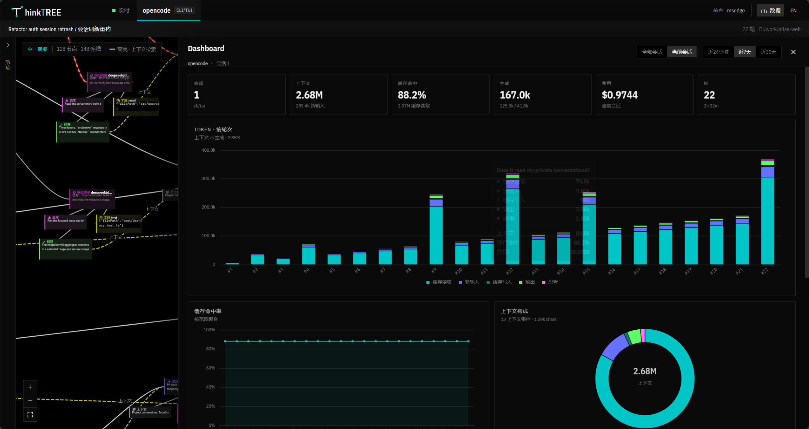

01
轨迹树
借鉴工业软件的设计树：按轮次展开提问、上下文、模型调用、思考、工具与回答。点击任意步骤，画布自动定位。
DESIGN TREE拖拽平移、滚轮缩放、点击节点展开。左侧轨迹树与画布同步定位。演示数据为合成数据，不会读取你的任何文件。
不是把日志换个皮肤，而是换一种组织信息的方式。每一步都有位置，每一轮都看得见。
借鉴工业软件的设计树：按轮次展开提问、上下文、模型调用、思考、工具与回答。点击任意步骤，画布自动定位。
DESIGN TREECanvas 2D 批量绘制，缩放、平移、拖动节点都不掉帧。信息按空间位置组织，而不是挤在一条滚动日志里。
CANVAS 2D右下角缩略图显示整个会话与当前视口。单击跳转、拖拽移动视口、滚轮缩放。长会话里也能随时回到某一轮。
NAVIGATE远、中、近三档细节：缩小保留全部节点与主线，放大展开完整内容。任何缩放级别都不会丢掉信息。
LOD需要看整体时打开右侧抽屉：token、缓存命中、上下文构成、费用、轮次、热力图与会话明细，按 24h / 7d / 30d 汇总。
ECHARTS只读取本地 agent 的会话存储。不上传内容、不截屏、不 OCR、无遥测。服务默认只建议在可信局域网使用。
PRIVACY当前会话看清每一步，全部会话看清成本与缓存。Dashboard 作为右侧抽屉展开，不打断画布。

没有本地 agent 时，先用合成数据预览界面。有 agent 时，直接启动面板跟随当前存活会话。
默认打开 http://localhost:9178。Windows 也可以双击 thinktree.bat，通过菜单启动、停止或查看日志。
独立在 webapp/ 中安装，后端保持零运行时依赖。
构建产物由 Node 内置 HTTP 服务托管，默认端口 9178。
npm run demo 会生成一份中英混合的多轮合成会话。
npm run web:installnpm run build:webnpm startnpm run demo读取各 agent 的原生本地存储，不做屏幕捕获。opencode TUI 与 pi CLI 是主要验证平台。
会话内容属于你。thinkTREE 只做一件事：把你本机已有的事件读出来，画成图。
读取 opencode、pi、Codex 等 agent 的本地数据库或 JSONL 文件，不修改原始数据。
会话内容不出本机。服务只在你启动的本地端口上通过 /api 提供数据。
直接解析结构化存储，不抓取屏幕像素，不识别终端画面。
没有统计上报、没有账号、没有云端依赖。断开网络仍可运行。
服务默认监听 0.0.0.0:9178 且没有登录鉴权。请只在可信局域网使用，或用防火墙限制端口，不要直接暴露到公网。